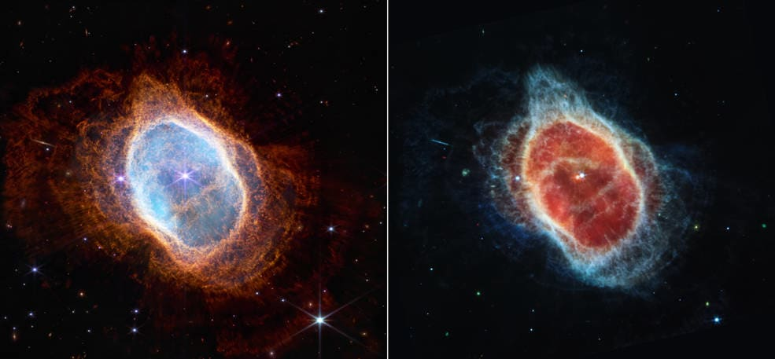

Actualidad: Noticias
2/8/2022
El presidente de los Estados Unidos comunicó este lunes que una operación secreta para eliminar a Ayman Al-Zawahiri, la cabeza de Al-Qaeda ha sido exitosa. El asesinato se concretó en una maniobra por parte de la CIA en territorio afgano mediante el uso de drones tácticos.
Actualidad: Noticias
30/7/2022
Silvina Batakis asume como ministra de economía el 3 de julio. 24 días después, durante una reunión que mantuvo con el presidente de la nación, hace presente la renuncia a su puesto. En los últimos días, este hecho desató un gran malestar entre el oficialismo, la oposición y, como no, los mercados.

Actualidad: Noticias
16/7/2022
Entre ellos se encuentran plataformas para comprar juegos, disfrutar de peliculas, series y música; Ejemplos son Spotify, Netflix, Steam, Play Station Network, Play Station Plus entre otros. Te explicamos por qué pasa esto y como podemos ver los precios actualizados en algunas plataformas.

Actualidad: Noticias
14/7/2022
El mundo obtiene el primer vistazo a las capacidades completas del telescopio espacial James Webb de la NASA. Las primeras imágenes a todo color y los datos espectroscópicos del telescopio se publicaron durante una transmisión televisada el martes 12 de julio.

Una sorpresiva, pero grave, escasez de un impensado producto en los Estados Unidos. Descubre la razón detrás de esta situación que mantiene a miles de estadounidenses en espera de una solución.